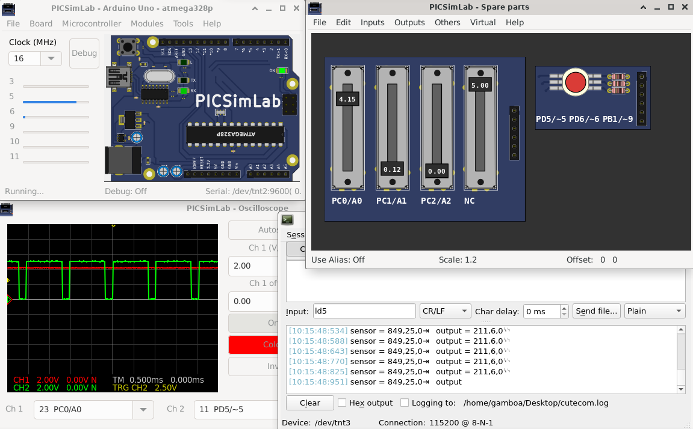

Chapter 1
Introduction
PICSimLab means Programmable IC Simulator Laboratory
PICSimLab is a realtime emulator of development boards with integrated MPLABX/avr-gdb debugger. PICSimLab supports some picsim microcontrollers and some simavr microcontrollers. PICSimLab have integration with MPLABX/Arduino IDE for programming the boards microcontrollers. As the purpose of PICSimLab is to emulate real hardware it does not have any source code editing support. For code editing and debugging the same tools used for a real board should be used with PICSimLab, such as MPLABX or Arduino IDE.
PICSimLab supports several devices (spare parts) that can be connected to the boards for simulation. As for example LEDs and push buttons for simple outputs and inputs and some more complex ones like the ethernet shield w5500 for internet connection or the color graphic display ili9340 with touchscreen. The the complete list of parts can be accessed in the chapter Spare Parts.
The experimental version boards supports uCsim, gpsim and qemu-stm32 simulators in addition to the stable ones.
